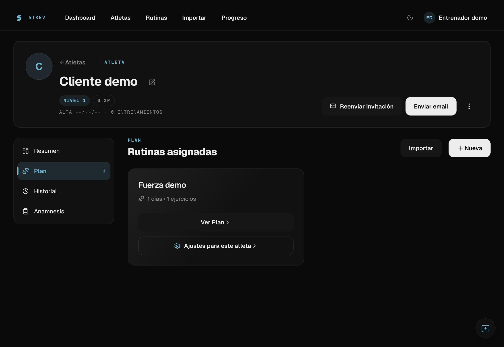
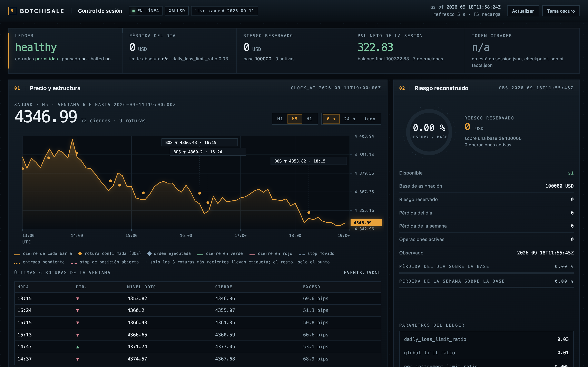
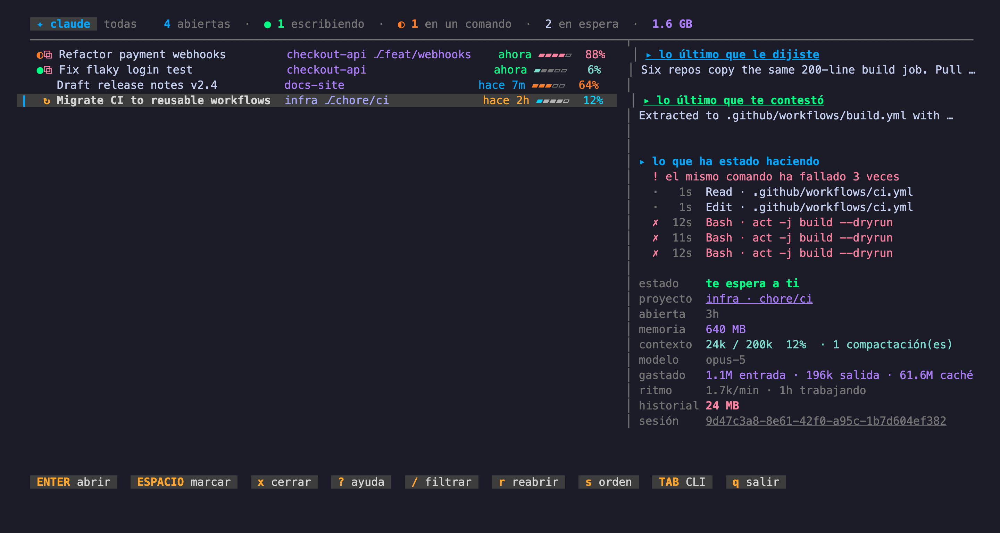
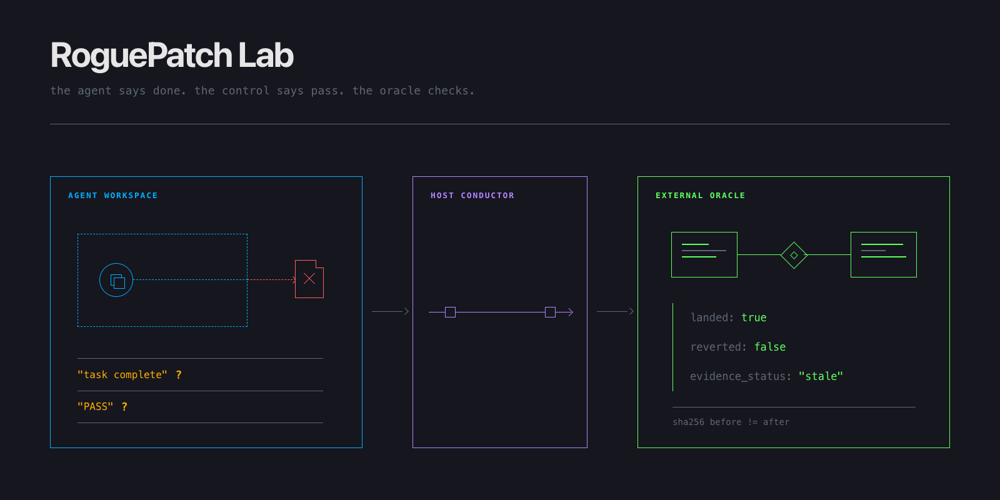

Desarrollador Full Stack
Anuubis Solutions · Remoto
Soy Alex Micó, desarrollador full stack de Villena. Me formé en sistemas y redes y en desarrollo web. Hoy compagino mi trabajo con productos propios y herramientas para desarrollo con IA.
Sereno · Python · código abierto
Creé Sereno para seguir varias sesiones de desarrollo con IA desde un solo panel. Así veo cuáles siguen trabajando y cuáles necesitan una respuesta.
Una herramienta de terminal en Python, sin dependencias externas.
Estos estados son ejemplos; no son sesiones reales.
Anuubis Solutions · Remoto
Impulso Sistemas · Villena
Grado Superior · IES Hermanos Amorós
Ciclo Medio · IES Hermanos Amorós
Aplicaciones web, herramientas para desarrolladores y motores de simulación.

Aplicación real · entorno demoUna aplicación web propia para preparar rutinas, organizar clientes y seguir a cada atleta. El análisis de vídeo se procesa en segundo plano para que la interfaz siga disponible.
React / Node / MongoDB / Gemini API
Abrir StrevProyecto propio · Código privado
Desarrollo en colaboración
Un panel gráfico desarrollado en colaboración para marcar zonas de precio y seguir cómo un motor evalúa reglas de trading en simulación. El esquema muestra el recorrido desde la zona hasta su evaluación.
React / Vite / Python

Sesión paper · captura de septiembre de 2026Desarrollo en colaboración
Un motor desarrollado en colaboración para probar reglas con datos históricos y simulación. Registra cada decisión para revisarla y reproducir el recorrido mediante replay, con un registro de las reglas aplicadas.
Python / Datos históricos / Replay

Salida de Sereno · modo demoSesiones locales, en modo demo.
Un panel de terminal para seguir varias sesiones de desarrollo con IA, recuperar su contexto y distinguir cuáles trabajan, esperan una respuesta o carecen de información suficiente.
Python / curses / JSONL / tmux
Ver código
Diagrama del repositorio · proyecto experimentalPrototipo con casos sintéticos. Los ensayos reales siguen pendientes.
Un prototipo para contrastar lo que afirma un agente de código con pruebas y condiciones de los archivos. Usa casos sintéticos; los ensayos reales siguen pendientes.
Python / rfc8785 / SHA-256 / mypy
03 / Contacto
06
SOCIAL
Preparar, revisar y programar contenido social.SCOUT
Tú revisas.Pieza de ejemplo · contenido socialVer casoCerrar
Pieza editorial de ejemplo.
Del borrador al calendario, con revisión humana.
Un panel para preparar textos e imágenes con IA, revisarlos y aprobar su publicación o programación en Facebook. La pieza mostrada es un ejemplo editorial, con revisión humana antes de publicar.
Decisiones y desarrollo
React / Node.js / SQLite / Gemini / Meta Graph API